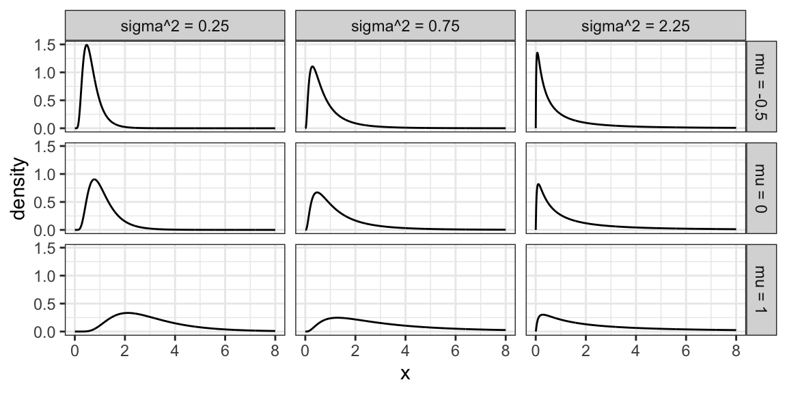

Chapter 6 Parametric Families of Distributions
Caution: in a highly developmental stage! See Section 1.1.
Concepts:
- Common scales: Positive ratio scale, binary, (0,1)
- Different data generating processes give rise to various parametric families of distributions. We’ll explain a good chunk of them.
- These are useful in data analysis because they narrow down the things that need to be estimated. Improving estimator quality by parametric distributional assumptions and MLE
suppressPackageStartupMessages(library(tidyverse))6.1 Concepts
Aside from the Binomial family of distributions, there are many other families that come up in practice. Here are some of them. For a more complete list, check out Wikipedia’s list of probability distributions.
In practice, it’s rare to encounter situations that are exactly described by a distribution family, but distribution families still act as useful approximations.
Details about these distributions are specified abundantly online. My favourite resource is Wikipedia, which organizes a distribution family’s properties in a fairly consistent way – for example here is the page on the Binomial family. We won’t bother transcribing these details here, but instead focus on some highlights.
What is meant by “family”? This means that there are more than one of them, and that a specific distribution from the family can be characterized the family’s parameters. This is what is meant by “parametric” – the distribution can be distilled down to a set of parameters.
For example, to identify a Gaussian distribution, we need to know the mean and variance. Note that some families are characterized by parameters that do not necessarily have an interpretation (or at least an easy one) – for example, to identify a Beta distribution, we need to know the two shape parameters \(\alpha\) and \(\beta\).
Technicality that you can safely skip: It’s not that there are “set” parameters that identify a distribution. For example, although a Beta distribution is identified by the two shape parameters \(\alpha\) and \(\beta\), the distribution can also be uniquely identified by its mean and variance. Or, by two quantiles. In general, we need as many pieces of information as there are parameters. This needs to be done in an identifiable way, however. For example, it’s not enough to identify an Exponential distibution by its skewness, because all Exponential distributions have a skewness of 2! The way in which we identify a distribution from parameters is called the parameterization of the distribution.
So far in our discussion of distributions, we’ve been talking about properties of distributions in general. Again, this is important because a huge component of data science is in attempting to describe an uncertain outcome, like the number of ships that arrive to the port of Vancouver on a given day, or the identity of a rock.
There are some common processes that give rise to probability distributions having a very specific form, and these distributions are very useful in practice.
Let’s use the Binomial family of distributions as an example.
6.1.1 Binomial Distribution
Process: Suppose you play a game, and win with probability \(p\). Let \(X\) be the number of games you win after playing \(N\) games. \(X\) is said to have a Binomial distribution, written \(X \sim \text{Binomial} (N, p)\).
Example: (Demonstration on the board) Let’s derive the probability of winning exactly two games out of three. That is, \(P(X=2)\) when \(N=3\).
pmf: A binomial distribution is characterized by the following pmf: \[P(X=x) = {N \choose x} p^x (1-p)^{N-x}.\]
Remember, \(N \choose x\) is read as “N choose x”. You can think of it as the number of ways you can make a team of \(x\) people from a total of \(N\) people. You can calculate this in R with choose(N, x), and its formula is \[{N \choose x} = \frac{N!}{x!(N-x)!}.\]
mean: \(Np\)
variance: \(Np(1-p)\)
Code: The pmf can be calculated in R with dbinom(); in python, scipy.stats.binom.
Here is an example pmf for a Binomial(N = 5, p = 0.2) distribution:
tibble(x = 0:5, probability = dbinom(x, size = 5, prob = 0.25)) %>%
ggplot(aes(x, probability)) +
geom_col(fill = "maroon") +
ggtitle("Binomial(5, 0.2)") +
theme_bw()
6.1.2 Families vs. distributions
Specifying a value for both \(p\) and \(N\) results in a unique Binomial distribution. For example, the Binomial(N = 5, p = 0.2) distribution is plotted above. It’s therefore helpful to remember that there are in fact many Binomial distributions (actually infinite), one for each choice of \(p\) and \(N\). We refer to the entire set of probability distributions as the Binomial family of distributions.
This means that it doesn’t actually make sense to talk about “the” Binomial distribution! This is important to remember as we add on concepts throughout MDS, such as the maximum likelihood estimator that you’ll see in a future course.
6.1.3 Parameters
True or false:
- For a distribution with possible values {0, 1, 2, 3, 4, 5}, five probabilities need to be specified in order to fully describe the distribution.
- For a Binomial distribution with \(N=5\), five probabilities need to be specified in order to fully describe the distribution.
Knowing \(p\) and \(N\) is enough to know the entire distribution within the Binomial family. That is, no further information is needed – we know all \(N+1\) probabilities based on only two numbers! Since \(p\) and \(N\) fully specify a Binomial distribution, we call them parameters of the Binomial family, and we call the Binomial family a parametric family of distributions.
In general, a parameter is a variable whose specification narrows down the space of possible distributions (or to be even more general, the space of possible models).
6.1.4 Parameterization
A Binomial distribution can be specified by knowing \(N\) and \(p\), but there are other ways we can specify the distribution. For instance, specifying the mean and variance is enough to specify a Binomial distribution.
Demonstration: Which Binomial distribution has mean 2 and variance 1? (on the whiteboard)
Exactly which variables we decide to use to identify a distribution within a family is called the family’s parameterization. So, the Binomial distribution is usually parameterized according to \(N\) and \(p\), but could also be parameterized in terms of the mean and variance. The “usual” parameterization of a distribution family is sometimes called the canonical parameterization.
In general, there are many ways in which a distribution family can be parameterized. The parameterization you use in practice will depend on the information you can more easily obtain.
6.1.5 Distribution Families in Practice
Why is it useful to know about distribution families?
In general when we’re modelling something, like river flow or next month’s net gains or the number of ships arriving at port tomorrow, you have the choice to make a distributional assumption or not. That is, do you want to declare the random variable of interest as belonging to a certain distribution family, or do you want to allow the random variable to have a fully general distribution? Both are good options depending on the scenario, and later in the program, we’ll explore the tradeoff with both options in more detail.
6.2 Common Parametric Families
6.2.1 Geometric
Process: Suppose you play a game, and win with probability \(p\). Let \(X\) be the number of attempts at playing the game before experiencing a win. Then \(X\) is said to have a Geometric distribution.
Note:
- Sometimes this family is defined so that \(X\) includes the winning attempt. The properties of the distribution differ, so be sure to be deliberate about which one you use.
- Since there’s only one parameter, this means that if you know the mean, you also know the variance!
Code: The pmf can be calculated in R with dgeom(); in python, scipy.stats.geom.
6.2.2 Negative Binomial
Process: Suppose you play a game, and win with probability \(p\). Let \(X\) be the number of attempts at playing the game before experiencing \(k\) wins. Then \(X\) is said to have a Negative Binomial distribution.
- Two parameters.
- The Geometric family results with \(k=1\).
Code: The pmf can be calculated in R with dnb(); in python, scipy.stats.nbinom.
6.2.3 Poisson
Process: Suppose customers independently arrive at a store at some average rate. The total number of customers having arrived after a pre-specified length of time follows a Poisson distribution, and can be parameterized by a single parameter, usually the mean \(\lambda\).
A noteable property of this family is that the mean is equal to the variance.
Examples that are indicative of this process:
- The number of ships that arrive at the port of Vancouver in a given day.
- The number of emails you receive in a given day.
Code: The pmf can be calculated in R with dpois(); in python, scipy.stats.poisson.
6.2.4 Bernoulli
- A random variable that is either \(1\) (with probability \(p\)) or \(0\) (with probability \(1-p\)).
- Parameterized by \(p\).
- A special case of the Binomial family, with \(N=1\).
6.2.5 Uniform (3 min)
A Uniform distribution has equal density in between two points \(a\) and \(b\) (for \(a < b\)), and is usually denoted by \[\text{Unif}(a, b).\] That means that there are two parameters: one for each end-point. Reference to a “Uniform distribution” usually implies continuous uniform, as opposed to discrete uniform.
The density is \[f(x) = \frac{1}{b - a} \text{ for } a \leq x \leq b.\] Here are some densities from members of this family:
tibble(
x = seq(-3.5, 1.5, length.out = 1000),
`Unif(0,1)` = dunif(x, min = 0, max = 1),
`Unif(-3, 1)` = dunif(x, min = -3, max = 1),
`Unif(-2, -1.5)` = dunif(x, min = -2, max = -1.5)
) %>%
pivot_longer(contains("Unif"), names_to = "distribution", values_to = "density") %>%
ggplot(aes(x, density)) +
facet_wrap(~ distribution) +
geom_line() +
theme_bw()
6.2.6 Gaussian / Normal (4 min)
Probably the most famous family of distributions. Has a density that follows a “bell-shaped” curve. Is usually parameterized by its mean \(\mu\) and variance \(\sigma^2\) (or sometimes just the standard deviation). A Normal distribution is usually denoted as \[N(\mu, \sigma^2).\]
The density is \[f(x)=\frac{1}{\sqrt{2\pi \sigma^2}}\exp\left(-\frac{(x-\mu)^2}{2\sigma^2}\right).\] Here are some densities from members of this family:
expand_grid(mu = c(-3, 0, 3),
sd = c(0.5, 1, 2)) %>%
mutate(f = map2(
mu, sd,
~ tibble(
x = seq(-8, 8, length.out = 1000),
density = dnorm(x, mean = .x, sd = .y)
)
)) %>%
unnest(f) %>%
mutate(mu = str_c("mean = ", mu),
var = str_c("variance = ", sd^2)) %>%
ggplot(aes(x, density)) +
facet_grid(mu ~ var) +
geom_line() +
theme_bw()6.2.7 Log-Normal Family
A random variable \(X\) as a Log-Normal distribution if \(\log X\) is Normal. This family is often parameterized by the mean \(\mu\) and variance \(\sigma^2\) of \(\log X\). The Log-Normal family is sometimes denoted, and this course will denote this family, as \[LN(\mu, \sigma^2).\]
Here are some densities from members of this family:
expand_grid(meanlog = c(-0.5, 0, 1),
sdlog = c(0.5, sqrt(0.75), 1.5)) %>%
mutate(f = map2(
meanlog, sdlog,
~ tibble(
x = seq(0, 8, length.out = 1000),
density = dlnorm(x, meanlog = .x, sdlog = .y)
)
)) %>%
unnest(f) %>%
mutate(meanlog = str_c("mu = ", meanlog),
varlog = str_c("sigma^2 = ", sdlog^2)) %>%
ggplot(aes(x, density)) +
facet_grid(meanlog ~ varlog) +
geom_line() +
theme_bw()
6.2.8 Exponential Family
The exponential family is for positive random variables, often interpreted as “wait time” for some event to happen. Characterized by a “memoryless” property, where after waiting for a certain period of time, the remaining wait time has the same distribution.
The family is characterized by a single parameter, usually either the mean wait time, or its reciprocal, the average rate at which events happen.
The densities from this family all decay starting at \(x=0\) for rate \(\beta\):
tibble(beta = c(1, 0.5, 0.25)) %>%
mutate(f = map(
beta,
~ tibble(
x = seq(0, 10, length.out = 1000),
density = dexp(x, rate = .x)
)
)) %>%
unnest(f) %>%
mutate(beta = str_c("beta = ", beta)) %>%
ggplot(aes(x, density)) +
facet_wrap(~ beta) +
geom_line() +
theme_bw()6.2.9 Weibull Family
A generalization of the Exponential family, which allows for an event to be more or less likely the longer you wait. Because of this flexibility and interpretation, this family is used heavily in survival analysis when modelling “time until an event”.
This family is characterized by two parameters, a scale parameter \(\lambda\) and a shape parameter \(k\) (where \(k=1\) results in the Exponential family).
Here are some densities:
expand_grid(k = c(0.5, 2, 5),
lambda = c(0.5, 1, 1.5)) %>%
mutate(f = map2(
k, lambda,
~ tibble(
x = seq(0, 3, length.out = 1000),
density = dweibull(x, shape = .x, scale = .y)
)
)) %>%
unnest(f) %>%
mutate(k = str_c("k = ", k),
lambda = str_c("lambda = ", lambda)) %>%
ggplot(aes(x, density)) +
facet_grid(k ~ lambda) +
geom_line() +
theme_bw() +
ylim(c(0, 5))
6.2.10 Beta Family
The Beta family of distributions is defined for random variables taking values between 0 and 1, so is useful for modelling the distribution of proportions. This family is quite flexible, and has the Uniform distribution as a special case.
Characterized by two positive shape parameters, \(\alpha\) and \(\beta\).
Examples of densities:
expand_grid(alpha = c(0.5, 1, 2),
beta = c(0.25, 1, 1.25)) %>%
mutate(f = map2(
alpha, beta,
~ tibble(
x = seq(0, 1, length.out = 1000),
density = dbeta(x, shape1 = .x, shape2 = .y)
)
)) %>%
unnest(f) %>%
mutate(alpha = str_c("alpha = ", alpha),
beta = str_c("beta = ", beta)) %>%
ggplot(aes(x, density)) +
facet_grid(beta ~ alpha) +
geom_line() +
theme_bw() +
ylim(c(0, 4))6.2.11 Activity
True or False?
- Knowing the probability of an event means that we also know the odds; but knowing the odds is not enough to calculate probability.
- A Binomial distribution only has one mean, but there are many Binomial distributions that have the same mean.
- A Poisson distribution only has one mean, but there are many Poisson distributions that have the same mean.
6.3 Relevant R functions (8 min)
R has functions for many distribution families. We’ve seen a few already in the case of discrete families, but here’s a more complete overview. The functions are of the form <x><dist>, where <dist> is an abbreviation of a distribution family, and <x> is one of d, p, q, or r, depending on exactly what about the distribution you’d like to calculate.
Possible prefixes <x>:
d: density function - we call this \(p\)p: cumulative distribution function (cdf) - we call this \(F\)q: quantile function (inverse cdf)r: random sample generation
Some abbreviations <dist>:
unif: Uniform (continuous)norm: Normal (continuous)lnorm: Log-Normal (continuous)geom: Geometric (discrete)pois: Poisson (discrete)binom: Binomial (discrete)- etc.
Examples:
The uniform family:
dunif(),punif(),qunif(),runif()
The Gaussian family:
dnorm(),pnorm(),qnorm(),rnorm()
Demonstration:
- What’s the density of the N(2, 4) distribution evaluated at the point \(x = 3\)?
- What’s the cdf of the Unif(0, 1) distribution evaluated at the points \(x = 0.25, 0.5, 0.75\)?
- What’s the median of the Unif(0, 2) distribution?
- Generate a random sample from the N(0, 1) distribution of size 10.
6.4 Analyses under a Distributional Assumption
Remember that the purpose of a univariate analysis on its own is to estimate parameters, communicate uncertainty about the estimates, and specify the distribution that “generated” the data. So far, we’ve seen how to do this using empirical methods, which don’t make any assumptions about how the data were obtained. But, if we suspect we know what distribution family generated the data, then this is potentially valuable information that can benefit the analysis.
This chapter explains how to proceed with your analysis by making a distributional assumption, and when this might be a good idea.
In the previous chapter, we estimated parameters like means and probabilities using empirical (or “sample versions”) of these parameters. Usually, these estimators perform well in the univariate setting, but there are some circumstances where they do not. There is a technique called Maximum Likelihood Estimation (MLE) that approximates the data distribution using a parametric family, and if done carefully, allows for significant improvements to estimation.
This chapter first explains what MLE is and how to implement the technique, as well as why and when it would be of use.
6.4.1 Maximum Likelihood Estimation
Maximum likelihood estimation is a way of estimating parameters by first estimating the data distribution from a specified parametric family. The steps are as follows.
- Make a distributional assumption: Choose a parametric family of distributions that you think is a decent approximation to the data distribution.
- Estimate: From that family, choose the distribution that fits the data “best”.
- Extract: Using the fitted distribution, extract the parameter(s) of interest (such as the mean and/or quantiles).
- Check the assumption: Check that the fitted distribution is a reasonable approximation to the data distribution (not required for estimation, but is good practice).
Let’s look at these steps in turn, together with the following examples.
Consider the following data set of damages caused by hurricanes, in billions of USD. The distribution of the 144 observations is depicted in the following histogram:
suppressPackageStartupMessages(library(tidyverse))
data(damage, package = "extRemes")
house <- suppressMessages(read_csv("data/house.csv"))
(hurricane_hist <- ggplot(damage, aes(Dam)) +
geom_histogram(aes(y = ..density..), bins = 50, alpha = 0.75) +
theme_bw() +
scale_x_continuous("Damage (billions of USD)",
labels = scales::dollar_format()) +
ylab("Density"))Data such as this can help an insurance company with their financial planning. Knowing an upper quantile, such as the 0.8-quantile, would give a sense of the damage caused by the “worst” hurricanes.
Consider the following sale prices of houses:
house <- read_csv("data/house.csv")## Rows: 1460 Columns: 81## ── Column specification ────────────────────────────────────────────────────────
## Delimiter: ","
## chr (43): MSZoning, Street, Alley, LotShape, LandContour, Utilities, LotConf...
## dbl (38): Id, MSSubClass, LotFrontage, LotArea, OverallQual, OverallCond, Ye...##
## ℹ Use `spec()` to retrieve the full column specification for this data.
## ℹ Specify the column types or set `show_col_types = FALSE` to quiet this message.house_hist <- ggplot(house, aes(SalePrice)) +
geom_histogram(aes(y = ..density..), alpha = 0.75) +
theme_bw() +
labs(x = "Price", y = "Density") +
scale_x_continuous(labels = scales::dollar_format())
cowplot::plot_grid(
house_hist,
house_hist + scale_x_log10(labels = scales::dollar_format())
)## Scale for 'x' is already present. Adding another scale for 'x', which will
## replace the existing scale.## `stat_bin()` using `bins = 30`. Pick better value with `binwidth`.
## `stat_bin()` using `bins = 30`. Pick better value with `binwidth`.6.4.1.1 Step 1: Make a distributional assumption
This step requires choosing a family to approximate the data distribution (you can find several families defined in the previous chapter). Here are two general guidelines that may help you choose a distribution family.
- Visually match the variable characteristics and shape of the data distribution to a distribution family.
- If possible, think about the process that “generated” the data, and match that process to the data-generating process defining a family.
Always keep in mind that there is almost never a “correct” choice! Remember, we are making an approximation here, not seeking a “true” distribution family.
Example 1. In the hurricane damages example, the data variable is a positive continuous variable, and has a histogram that appears to decay starting from a damage of zero. The selected distribution should accomodate this – Weibull, Gamma, or GPD can all accomodate this. But the family should allow for heavy-tailed distributions to accomodate the two large data values that we see in the histogram, leaving a GPD as a good candidate. As for the way the data are “generated”, the data are inherently recorded because they are extreme, and this matches the way that a GPD is derived.
Example 2. In the house prices example, the family should also accomodate a positive continuous random variable, should be unimodal with two tails, and be skewed to the right. A Weibull or lognormal distribution so far seem like good candidates. Since the log of house prices looks like a Gaussian distribution, we choose a lognormal distribution, since this is how the lognormal family is defined.
6.4.1.2 Step 2: Estimate
So far, we’ve selected a family of distributions. Now, in this step, we need to select the distribution from this family that best matches the data. This step is the namesake of MLE.
The key is to select the distribution for which the observed data are most likely to have been drawn from. We can do this through a quantity called the likelihood, which can be calculated for any distribution that has a density/pmf, then finding the distribution that has the largest likelihood. Let’s break these two concepts down.
- Likelihood.
The likelihood is a useful way to measure how well a distribution fits the data. To calculate the likelihood, denoted \(\mathcal{L}\), from data \(y_1, \ldots, y_n\) and a distribution with density/pmf \(f\), calculate the product of the densities/pmf’s evaluated at the data: \[\mathcal{L} = \prod_{i=1}^n f(y_i).\]
When \(f\) is a pmf, you can interpret the likelihood as the probability of observing the data under the distribution \(f\). When \(f\) is a density, the interpretation of likelihood is less tangible, and is the probability density of observing the data under the distribution \(f\). These interpretations are exactly true if the data are independent, but are still approximately true if data are “almost” independent. Even with non-independent data, the likelihood is still a useful measurement.
A similar quantity to the likelihood is the negative log likelihood (nllh), defined as \[\ell = -\log\mathcal{L} = -\sum_{i=1}^n \log f(y_i).\] The nllh is numerically more convenient than the likelihood. For example, the likelihood (\(\mathcal{L}\)) tends to be an extremely small number, whereas the nllh typically is not. For instance, 100 draws from a N(0,1) distribution results in a likelihood that’s typically around \(3 \times 10^{-62},\) whereas the nllh is typically around 141.5. Note that minimizing the nllh is the same as maximizing the likelihood.
- Finding the distribution that has the largest likelihood
Remember that each distribution in the distribution family that we selected can be represented by its parameters – for example, the Normal distribution by its mean and variance, or the Beta distribution by \(\alpha\) and \(\beta\). This means that we can view the likelihood as a function of the family’s parameters, and optimize this function! This can sometimes be done using calculus, but is most often done numerically.
We end up with estimates of the distribution’s parameters, which is the same thing as having an estimate of the data’s distribution. Don’t stop here if you are looking to estimate something other than the distibution’s parameters – move on to Step 3.
Example 1. For the hurricane example, first find the GPD shape and scale parameters that maximize the likelihood (or, minimize the nllh).
gpd_nllh <- function(parameters) {
scale <- parameters[1]
shape <- parameters[2]
if (scale <= 0) return(Inf)
-sum(evd::dgpd(damage$Dam, scale = scale, shape = shape, log = TRUE))
}
gpd_optim <- optim(c(1, 1), gpd_nllh)
gpd_scale <- gpd_optim$par[1]
gpd_shape <- gpd_optim$par[2]Take a look at the GPD density corresponding to these parameters, with the data histogram in the background:
gpd_density <- function(x) evd::dgpd(x, scale = gpd_scale, shape = gpd_shape)
hurricane_hist +
stat_function(fun = gpd_density, colour = "blue") +
ylim(c(0, 0.13))## Warning: Removed 1 rows containing missing values (geom_bar).## Warning: Removed 2 row(s) containing missing values (geom_path).Example 2.
ln_nllh <- function(parameters) {
loc <- parameters[1]
scale <- parameters[2]
if (scale <= 0) return(Inf)
-sum(dlnorm(house$SalePrice, meanlog = loc, sdlog = scale, log = TRUE))
}
ln_optim <- optim(c(0, 1), ln_nllh)
ln_loc <- ln_optim$par[1]
ln_scale <- ln_optim$par[2]ln_density <- function(x) dlnorm(x, meanlog = ln_loc, sdlog = ln_scale)
house_hist +
stat_function(fun = ln_density, colour = "blue")## `stat_bin()` using `bins = 30`. Pick better value with `binwidth`.
6.4.1.3 Step 3: Extract
Now that we have the data distribution estimated, we can extract any parameter we’d like, such as the mean or quantiles. This might involve looking up formulas based on the distribution’s parameters – for example, the mean of a Beta distribution with parameters \(\alpha\) and \(\beta\) is \(\alpha/(\alpha + \beta)\).
Example 1. Here is the MLE of the median hurricane damage:
gpd_qf <- function(p) evd::qgpd(p, scale = gpd_scale, shape = gpd_shape)
gpd_qf(0.5)## [1] 0.1884567Here is the MLE of the 0.9-quantile:
gpd_qf(0.9)## [1] 6.659546Here is the MLE of the IQR:
gpd_qf(0.75) - gpd_qf(0.25)## [1] 0.9199308Example 2.
Mean of the Lognormal distribution can be computed as \(\exp(\mu + \sigma^2/2)\); so the MLE for the mean is:
exp(ln_loc + ln_scale^2/2)## [1] 180579.9Variance of the Lognormal distribution can be computed as \((\exp(\sigma^2)-1)(\exp(2\mu + \sigma^2)\); so the MLE for the variance is:
(exp(ln_scale^2) - 1) * (exp(2*ln_loc + ln_scale^2))## [1] 5642912264The MLE for the 0.9-quantile is:
qlnorm(0.9, meanlog = ln_loc, sdlog = ln_scale)## [1] 2782056.4.1.4 Step 4: Check the Assumption
In order to end up with “good” estimates from MLE, the fitted distribution from Step 2 should be a decent approximation to the data distribution.
To see why, consider a poor distributional assumption – such as approximating the distribution of house prices as Uniform. We end up with the following density fitted by MLE:
## `stat_bin()` using `bins = 30`. Pick better value with `binwidth`.## [1] 214925## [1] 574975The fitted density is flat, and does not match the data (histogram) at all. This means we can anticipate parameter estimates to be way off. For example, according to the model, the mean is somewhere around $400,000, and a half of the house prices roughly lie somewhere between $200,000 and $600,000.
The above method of comparing the modelled density to the histogram is one effective way of checking the distributional assumption. Another way is to use a QQ-plot.
These visual methods might seem informal, but they are very powerful, and should always be investigated if possible. After visualizing the fit, if you want to add more rigor to your assumption checking, you can consider a hypothesis test such as the Kolmogorov-Smirnov test, the Anderson-Darling test, or the Cram'{e}r-von Mises test for equality of distributions.
Just remember that there is no such thing as a “correct” distributional assumption in practice, but rather just approximations that have different degrees of plausibility. The key is in avoiding bad assumptions, as opposed to finding the “right” assumption.
6.4.2 Usefulness in Practice
The MLE is an overall superior way to estimate parameters, and has some theoretically desirable properties – as long as the distributional assumption from Step 1 is not a bad one. Overall, in the univariate setting, the improvement brought about by MLE is in general underwhelming, except in some situations. Where MLE really shines is in the regression setting, as is shown in a later chapter, but it’s important to understand the fundamentals in the univariate case before extending concepts to the regression setting. This chapter explores the following:
- Under what situations in the univariate setting does the MLE really shine?
- Just how “bad” does an assumption have to be in order for the MLE to be worse than the empirical estimate?
Ultimately, the question is not whether the MLE is better than empirical estimates, but rather whether making a distributional assumption is better than not.
6.4.2.1 Where MLE really shines
6.4.2.2 Effect of Assumption Badness
Take-aways:
- sampling distributions are narrower for MLE, but more and more biased as the distributional assumption gets worse and worse.
- Most of the time in the univariate setting, the MLE is often not much better than the empirical estimate, and is sometimes even identical. Aside from the cases described below, where MLE really shines is in the regression setting,
Take a look at the sampling distributions of three estimators of the 0.8-quantile: the sample version, the MLE under a Gaussian assumption, and the MLE under a generalized Pareto distribution (GPD) assumption. The sampling distributions are obtained using bootstrapping. The Gaussian-based MLE is an example of a bad MLE that uses a poorly chosen assumption – its sampling distribution is much wider than that of the sample version. On the other hand, the GPD-based MLE is based on a much more realistic assumption, and shows a significant improvement to the sample version – its sampling distribution is much narrower.
# dgpd <- function(x, sig, xi) 1/sig*(1 + xi*(x/sig))^(-1/(xi+1))
# gpd_quantile <- function(x, p = 0.5) {
# fit <- ismev::gpd.fit(x, 0, show = FALSE)
# sigma <- fit$mle[1]
# xi <- fit$mle[2]
# sigma * (p^(-xi) - 1) / xi
# }
# wei_quantile <- function(x, p = 0.5) {
# nllh <- function(par) -sum(dweibull(x, par[1], par[2], log = TRUE))
# par_hat <- optim(c(1,1), nllh)$par
# qweibull(p, par_hat[1], par_hat[2])
# }
# sampling_dist <- damage %>%
# bootstraps(times = 1000) %>%
# pull(splits) %>%
# map(as_tibble) %>%
# map_df(~ summarise(
# .x,
# bar = quantile(Dam, probs = 0.8),
# mle_gpd = gpd_quantile(Dam, 0.8),
# mle_gau = qnorm(0.8, mean = mean(Dam), sd = sd(Dam)))
# )
# sampling_dist %>%
# gather(key = "method", value = "estimate") %>%
# ggplot(aes(estimate)) +
# facet_wrap(~method, nrow = 1, scales = "free_x") +
# geom_histogram(bins = 30) +
# theme_bw() Caution: A common misconception is that the two large observations in the dataset are outliers, and therefore should be removed. However, doing so would bias our understanding of hurricance damages, since these “outliers” are real occurences.
In other cases, an MLE does not result in much of an improvement at all.
Although there are far fewer cases in the univariate case compared to the regression setting where MLE gives a dramatic improvement to estimation, it’s still worth discussing when it’s most useful in the univariate setting and to ground concepts.
High quantile example for a PI:
# N <- 10000
# rate <- 1
# ordered <- numeric(0)
# mle <- numeric(0)
# for (i in 1:N) {
# x <- rexp(10, rate = rate)
# ordered[i] <- quantile(x, probs = 0.975, type = 1)
# mle[i] <- qexp(0.975, rate = 1/mean(x))
# }
# tibble(ordered, mle) %>%
# gather(value = "estimate") %>%
# ggplot(aes(estimate)) +
# geom_density(aes(group = key, fill = key), alpha = 0.5) +
# geom_vline(xintercept = qexp(0.975, rate = rate),
# linetype = "dashed") +
# theme_bw()
# sd(ordered)
# sd(mle)In both cases, the sampling distribution of the MLE is better than that of the sample version – that is, more narrow and (sometimes) centered closer to the true value.
Is there a better estimator than the MLE? It turns out that the MLE is realistically the best that we can do – as long as the distributional assumption is not too bad of an approximation. If you’re curious to learn more, the end of this chapter fleshes this out using precise terminology.
If the improvement by using MLE does not seem very impressive to you, you’d be right – at least in the univariate world. To see much difference between the MLE and sample version estimators, you’d need to be estimating low-probability events with a small amount of data. In fact, estimating the mean using MLE most often results in the same estimator as the sample mean! Don’t write off the MLE just yet – it really shines in the regression setting, where it has even more benefits than just improved estimation. Tune in to Part II to learn more.
As an example of (1), suppose you are measuring the ratio of torso height to body height. Since your sample falls between 0 and 1, and probably does not have a weirdly shaped density, a Beta distribution would be a good assumption, since the Beta family spans non-weird densities over (0, 1). However, not knowing the data-generating process, you would not be able to justify the distribution completely (and that’s OK). As an example of (2), perhaps you are operating the port of Vancouver, BC, and based on your experience, know that vessels arrive more-or-less independently at some average rate. This is how a Poisson distribution is defined. Not only that, but the data appear to be shaped like a Poisson distribution. Then it would be justifiable to assume the data follow a Poisson distribution.
# n <- 50
# N <- 1000
# fit_mle <- numeric(0)
# fit_ls <- numeric(0)
# for (i in 1:N) {
# x <- rnorm(n)
# mu <- 1/(1+exp(-x))
# y <- rbinom(n, size = 1, prob = mu)
# fit_mle[i] <- glm(y ~ x, family = "binomial")$coefficients[2]
# ls <- function(par) sum((y - 1/(1+exp(-par[1]-par[2]*x)))^2)
# fit_ls[i] <- optim(c(0,1), ls)$par[2]
# }
# tibble(fit_mle, fit_ls) %>%
# gather(value = "beta") %>%
# ggplot(aes(beta)) +
# # scale_x_log10() +
# geom_density(aes(group = key, fill = key), alpha = 0.5)
# sd(fit_mle)
# sd(fit_ls)
# IQR(fit_mle)
# IQR(fit_ls)
# ## More extremes show up with LS (at least with n=50):
# sort(fit_ls) %>% tail(10)
# sort(fit_mle) %>% tail(10)
# ## Gaussian assumption
# ## - LS not even that good at n=100 -- bowed down. MLE is good.
# ## - MLE qqplot with n=50 looks about the same as LS with n=100
# ## - LS at n=50 is heavy tailed (seemingly).
# qqnorm(fit_mle)
# qqnorm(fit_ls)For n=50, check out an example that results in an extreme beta:
# n <- 50
# beta <- 0
# while (beta < 300) {
# x <- rnorm(n)
# mu <- 1/(1+exp(-x))
# y <- rbinom(n, size = 1, prob = mu)
# ls <- function(par) sum((y - 1/(1+exp(-par[1]-par[2]*x)))^2)
# .optim <- optim(c(0,1), ls)
# beta <- .optim$par[2]
# alpha <- .optim$par[1]
# }
# if (.optim$convergence == 0) stop("optim didn't successfully converge.")
# mle <- glm(y ~ x, family = "binomial")$coefficients
# qplot(x, y) +
# stat_function(fun = function(x) 1/(1+exp(-alpha-beta*x)), mapping = aes(colour = "LS")) +
# stat_function(fun = function(x) 1/(1+exp(-mle[1]-mle[2]*x)), mapping = aes(colour = "MLE"))# # MLE is still slightly narrower, even for a Beta(2,2) distribution (which is
# # symmetric and bell-like) -- for n=5 and n=50. Both close to Gaussian, even at
# # n=5 (as expected).
# shape1 <- 2
# shape2 <- 2
# foo <- function(x) dbeta(x, shape1, shape2)
# curve(foo, 0, 1)
# n <- 5
# N <- 1000
# xbar <- numeric(0)
# mle <- numeric(0)
# for (i in 1:N) {
# x <- rbeta(n, shape1, shape2)
# xbar[i] <- mean(x)
# nllh <- function(par) {
# if (min(par) <= 0) return(Inf)
# -sum(dbeta(x, par[1], par[2], log = TRUE))
# }
# .optim <- optim(c(shape1, shape2), nllh)
# par_hat <- .optim$par
# mle[i] <- par_hat[1] / sum(par_hat)
# }
# plot(mle - xbar) # The estimates aren't the same.
# tibble(mle, xbar) %>%
# gather() %>%
# ggplot(aes(value)) +
# geom_density(aes(group = key, fill = key), alpha = 0.5)
# sd(mle)
# sd(xbar)
# qqnorm(mle)
# qqnorm(xbar)# # Univariate MLE *especially* important for heavy tailed distributions!
# nu <- 1.5
# n <- 5
# N <- 1000
# xbar <- numeric(0)
# mle <- numeric(0)
# for (i in 1:N) {
# x <- rt(n, df = nu)
# xbar[i] <- mean(x)
# nllh <- function(par) -sum(dt(x, df = par[1], ncp = par[2], log = TRUE))
# .optim <- optim(c(nu, 0), nllh)
# mle[i] <- .optim$par[2]
# }
# plot(mle - xbar) # The estimates aren't the same.
# tibble(mle, xbar) %>%
# gather() %>%
# ggplot(aes(value)) +
# geom_density(aes(group = key, fill = key), alpha = 0.5)
# sd(mle)
# sd(xbar)
# qqnorm(mle)
# qqnorm(xbar)